NQ 一分 K 急跌 + 均線排列 · 全部圖
NQ=F · 2026-08-18 ~ 2026-08-25 · 7546 根 1m
（2026-08-18 00:09 ~ 2026-08-25 12:55 ET）。
紅虛線急跌、綠虛線短均排列、金虛線完整八條打開。下面三區：急跌+排列全部命中、急跌失敗、以及只看均線的 25 張完整打開。
急跌 × 均線梯子
| 條件 | 急跌 | 未破低 | 短均 5>10>20 | 接到 MA60 | 完整八條 |
|---|---|---|---|---|---|
| 嚴格急跌（5×ATR 或 50 點、5×量、跌破全部均線） | 5 | 1 | 1 | 1 | 0 |
| 中等急跌 | 14 | 3 | 2 | 2 | 0 |
| 寬鬆急跌 | 28 | 2 | 1 | 1 | 0 |
| 只看均線、不看急跌（30 分鐘去重） | — | — | 97 | 68 | 25 |
只看排列這一窗有 25 筆完整打開；急跌+排列以嚴格條件為準。
急跌 + 排列（全部命中）
嚴格／中等／寬鬆命中去重後全部列出；標籤取最嚴那一檔。
嚴格 急跌 08-18 20:01 → 短均 08-18 20:30 → 完整 未完成

急跌 81.0 點 · 量比 10.0× · ATR 7.5×
短均進場 29549.50 · 200>5>120>100>60>10>20>30
進場後 15/30/60m：+23.2pt / -13.0pt / +18.2pt
中等 急跌 08-19 15:50 → 短均 08-19 16:47 → 完整 未完成

急跌 27.2 點 · 量比 3.2× · ATR 2.0×
短均進場 29537.50 · 200>120>100>5>10>20>30>60
進場後 15/30/60m：+57.0pt / +81.8pt / +96.0pt
嚴格急跌但沒走出排列
有砸、有量，但 90 分鐘內破低或均線沒排成多頭。
急跌未走出排列 08-20 07:00
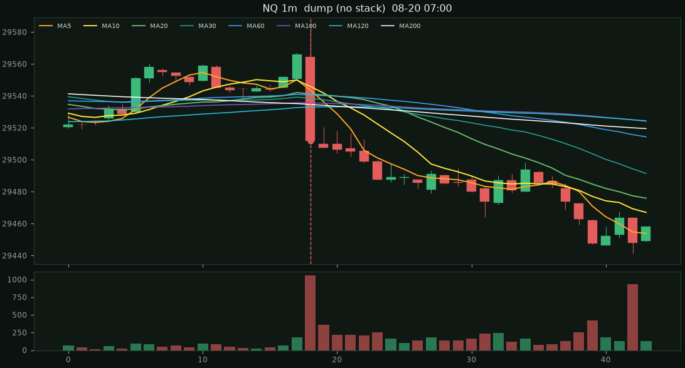
急跌 70.8 點 · 量比 9.6× · ATR 6.1× · 90 分鐘內破低或均線沒排成多頭
急跌未走出排列 08-21 09:30
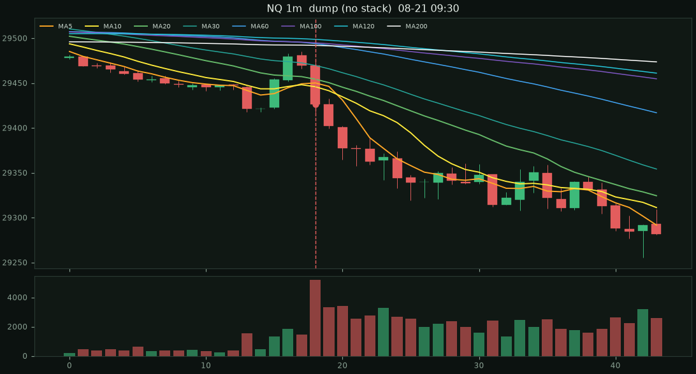
急跌 62.0 點 · 量比 6.1× · ATR 4.3× · 90 分鐘內破低或均線沒排成多頭
急跌未走出排列 08-24 08:32
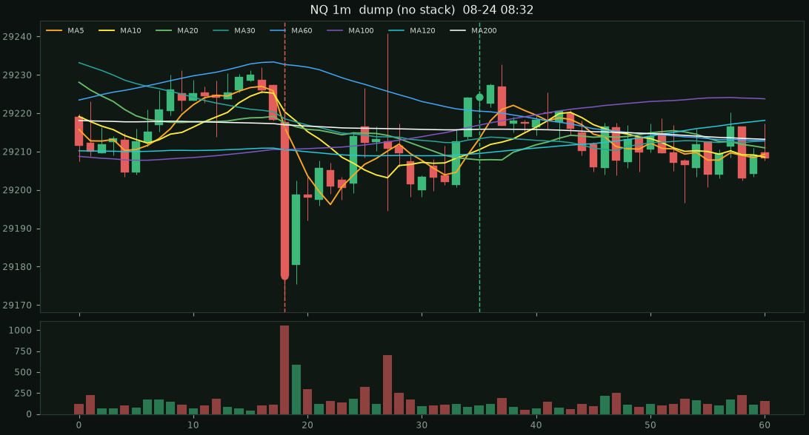
急跌 50.0 點 · 量比 6.4× · ATR 4.5× · 90 分鐘內破低或均線沒排成多頭
急跌未走出排列 08-24 09:30
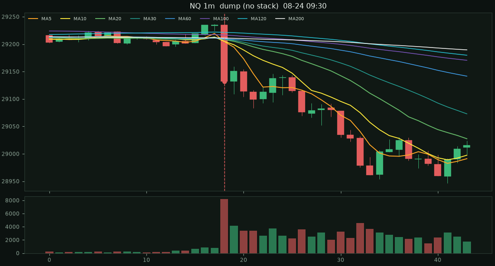
急跌 113.8 點 · 量比 11.9× · ATR 6.6× · 90 分鐘內破低或均線沒排成多頭
只看均線：完整八條打開（25 張）
不管有沒有急跌。綠虛線是 MA5>10>20>30>60>100>120>200 第一次排好、價站上。
08-19 03:59 · 5>10>20>30>60>100>120>200
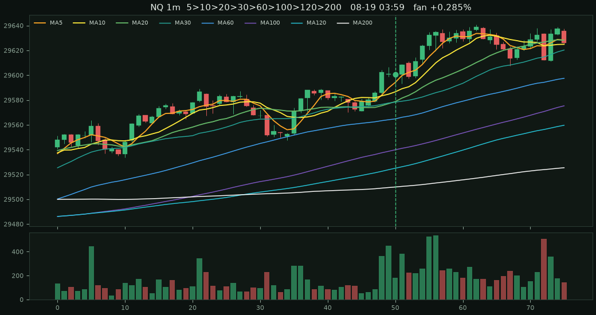
進場 29600.75 · 短均相對 MA200 +0.285%
進場後 15/30/60m：+24.0pt / +21.8pt / +8.8pt
08-19 08:42 · 5>10>20>30>60>100>120>200
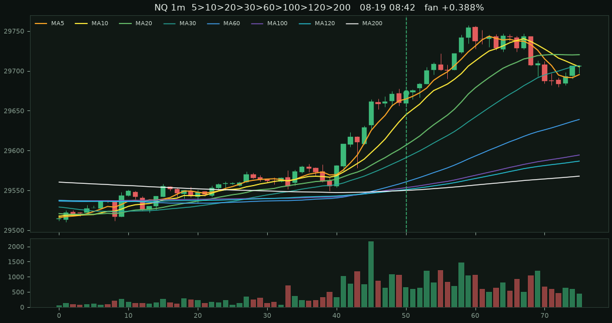
進場 29672.50 · 短均相對 MA200 +0.388%
進場後 15/30/60m：+69.8pt / +58.5pt / -75.0pt
08-19 09:24 · 5>10>20>30>60>100>120>200
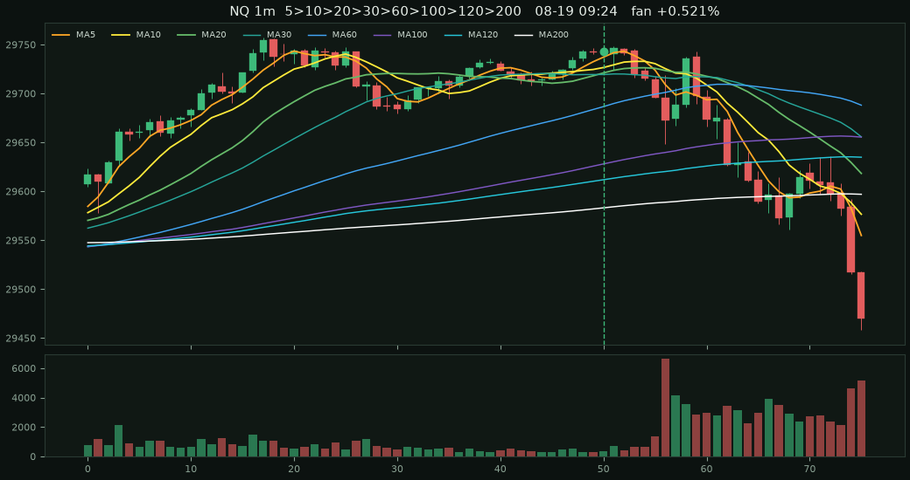
進場 29743.00 · 短均相對 MA200 +0.521%
進場後 15/30/60m：-153.2pt / -272.0pt / -327.5pt
08-19 18:40 · 5>10>20>30>60>100>120>200
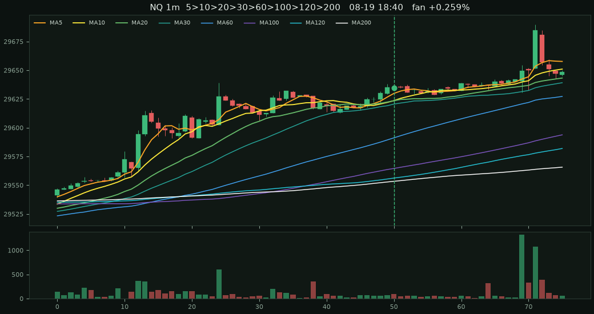
進場 29634.75 · 短均相對 MA200 +0.259%
進場後 15/30/60m：+5.2pt / +20.2pt / +20.8pt
08-19 19:13 · 5>10>20>30>60>100>120>200
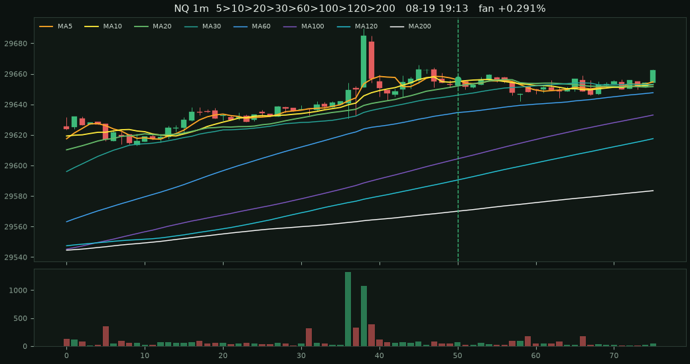
進場 29656.25 · 短均相對 MA200 +0.291%
進場後 15/30/60m：+0.5pt / +2.2pt / -5.2pt
08-19 19:48 · 5>10>20>30>60>100>120>200
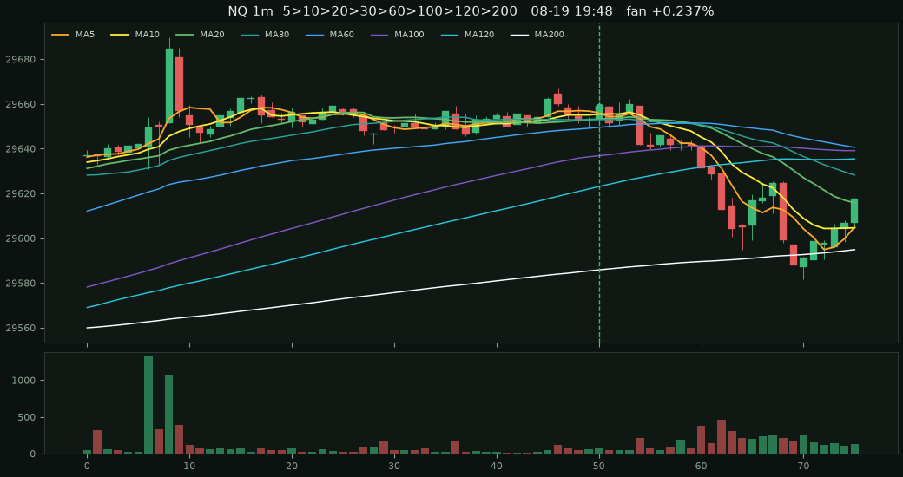
進場 29658.50 · 短均相對 MA200 +0.237%
進場後 15/30/60m：-41.5pt / -7.5pt / -11.2pt
08-20 02:44 · 5>10>20>30>60>100>120>200
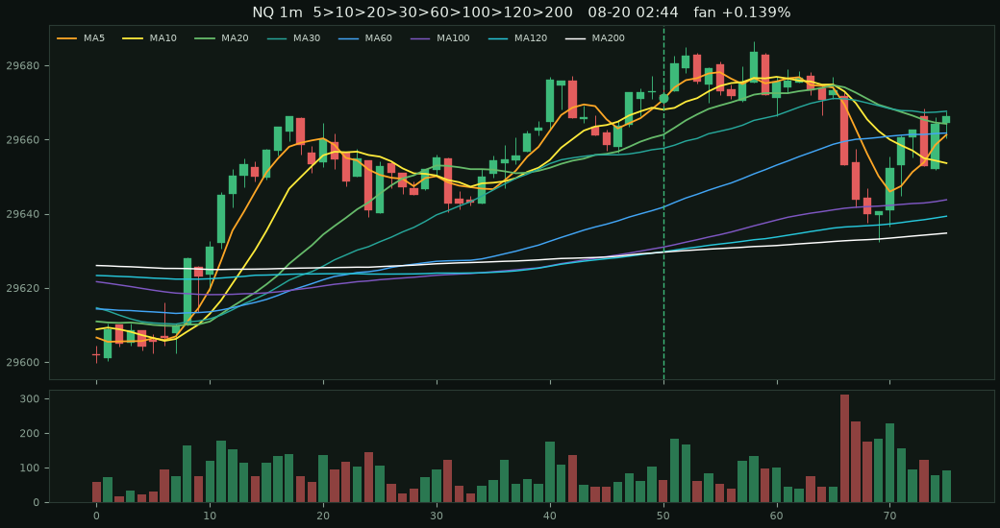
進場 29671.25 · 短均相對 MA200 +0.139%
進場後 15/30/60m：+2.0pt / -33.5pt / -64.8pt
08-20 18:58 · 5>10>20>30>60>100>120>200
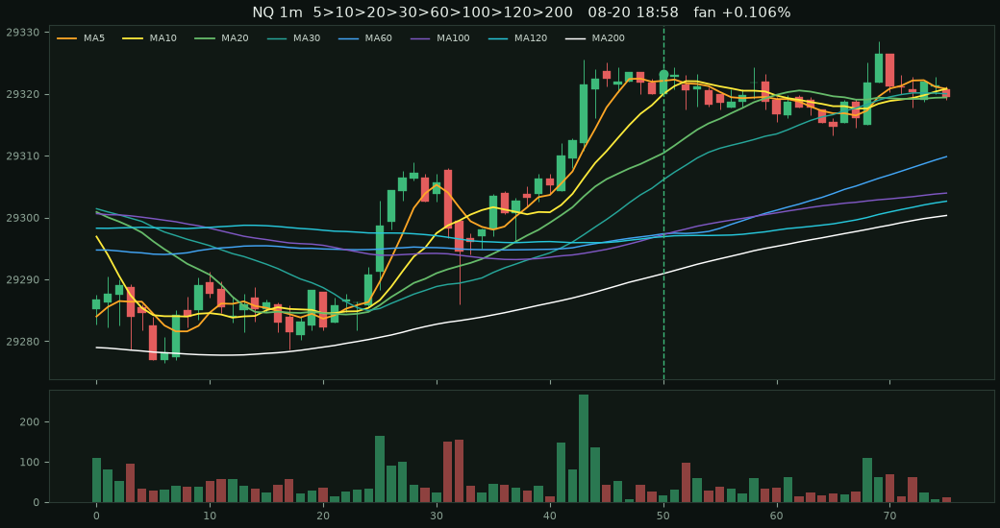
進場 29323.25 · 短均相對 MA200 +0.106%
進場後 15/30/60m：-8.5pt / -5.0pt / -25.0pt
08-20 20:13 · 5>10>20>30>60>100>120>200
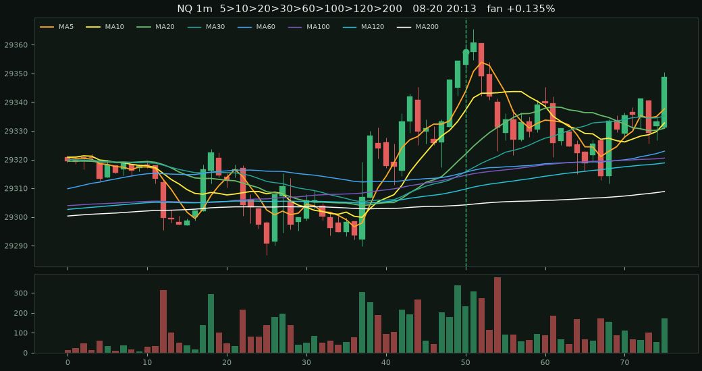
進場 29357.50 · 短均相對 MA200 +0.135%
進場後 15/30/60m：-38.8pt / -21.2pt / -36.0pt
08-20 20:45 · 5>10>20>30>60>100>120>200
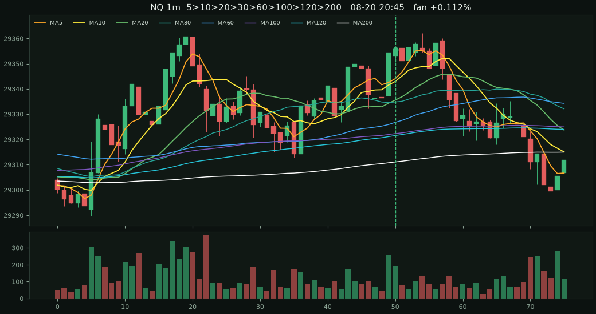
進場 29355.50 · 短均相對 MA200 +0.112%
進場後 15/30/60m：-29.0pt / -18.5pt / -12.5pt
08-20 22:06 · 5>10>20>30>60>100>120>200
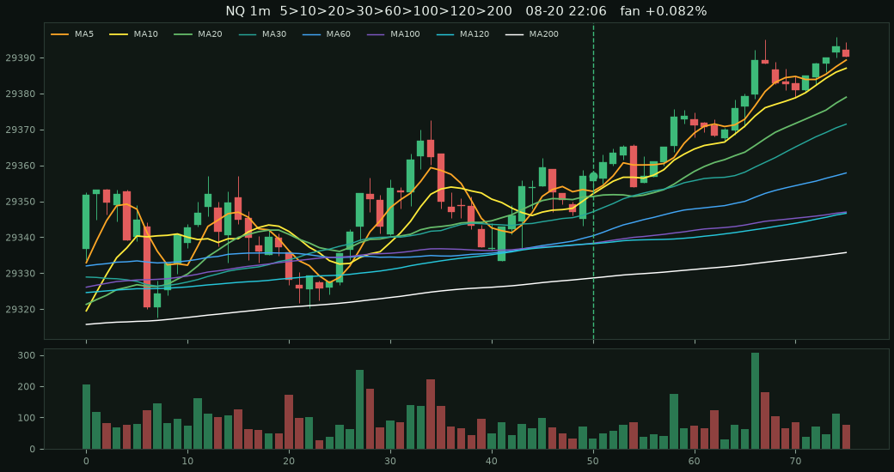
進場 29357.00 · 短均相對 MA200 +0.082%
進場後 15/30/60m：+22.2pt / +37.0pt / +13.5pt
08-21 02:32 · 5>10>20>30>60>100>120>200
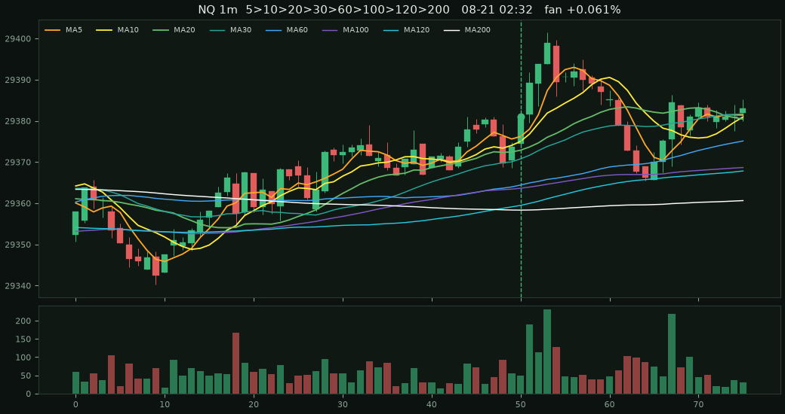
進場 29381.00 · 短均相對 MA200 +0.061%
進場後 15/30/60m：-11.0pt / +13.8pt / +54.2pt
08-21 03:05 · 5>10>20>30>60>100>120>200
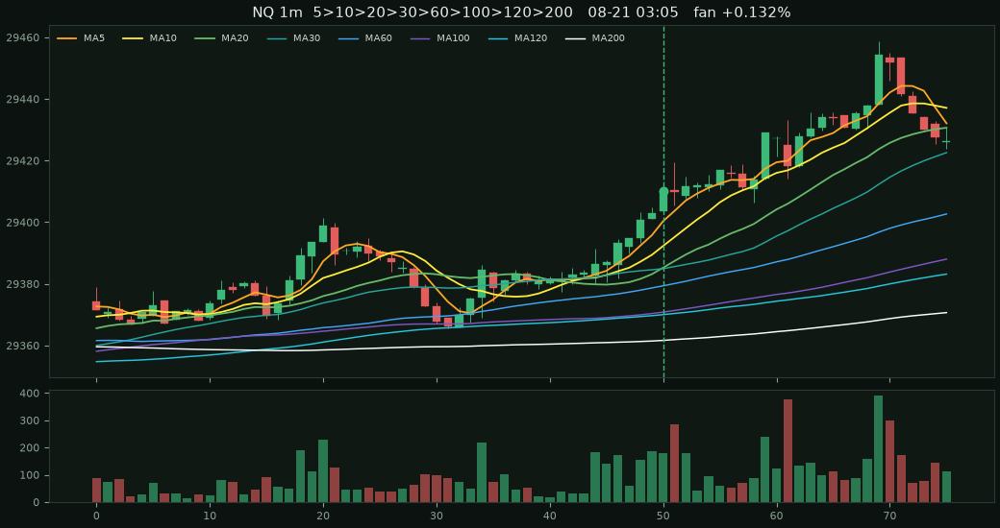
進場 29410.00 · 短均相對 MA200 +0.132%
進場後 15/30/60m：+23.8pt / +26.5pt / +21.0pt
08-21 04:03 · 5>10>20>30>60>100>120>200
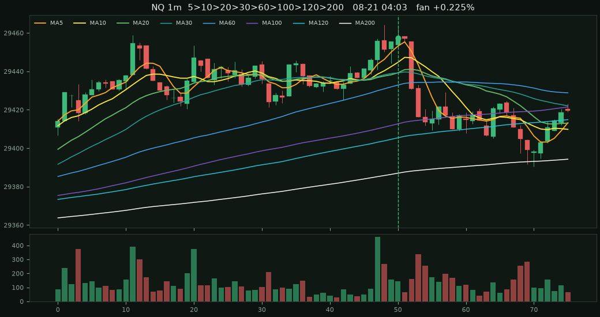
進場 29457.25 · 短均相對 MA200 +0.225%
進場後 15/30/60m：-34.0pt / -28.8pt / -18.8pt
08-21 05:51 · 5>10>20>30>60>100>120>200
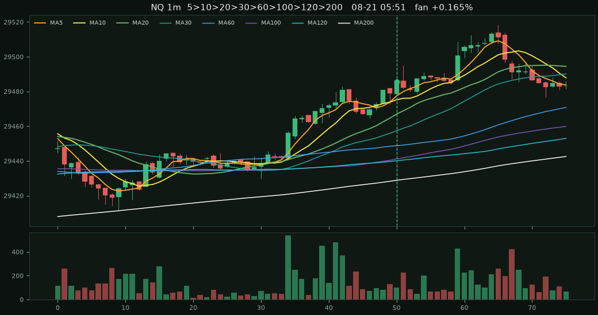
進場 29485.50 · 短均相對 MA200 +0.165%
進場後 15/30/60m：+25.8pt / -11.8pt / -5.8pt
08-21 08:41 · 5>10>20>30>60>100>120>200
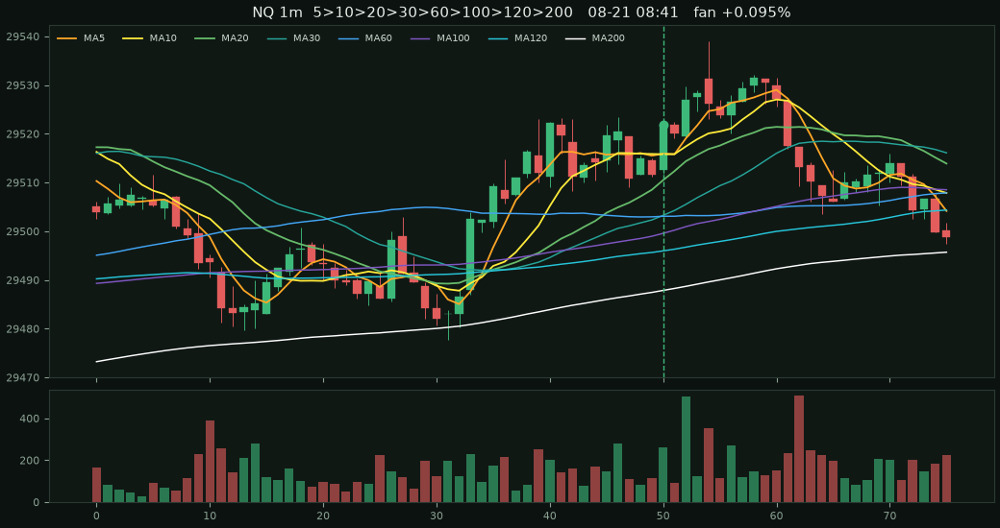
進場 29521.75 · 短均相對 MA200 +0.095%
進場後 15/30/60m：-15.8pt / -42.5pt / -183.2pt
08-24 06:07 · 5>10>20>30>60>100>120>200
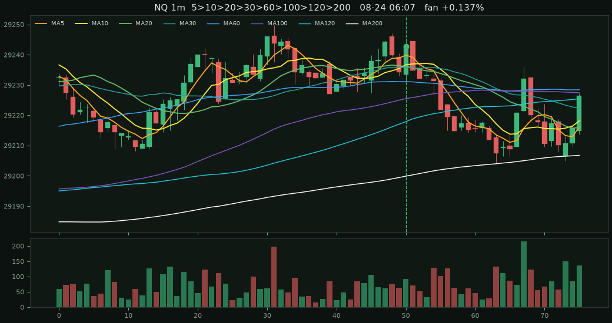
進場 29242.75 · 短均相對 MA200 +0.137%
進場後 15/30/60m：-34.0pt / -13.8pt / -95.8pt
08-24 12:21 · 5>10>20>30>60>100>120>200
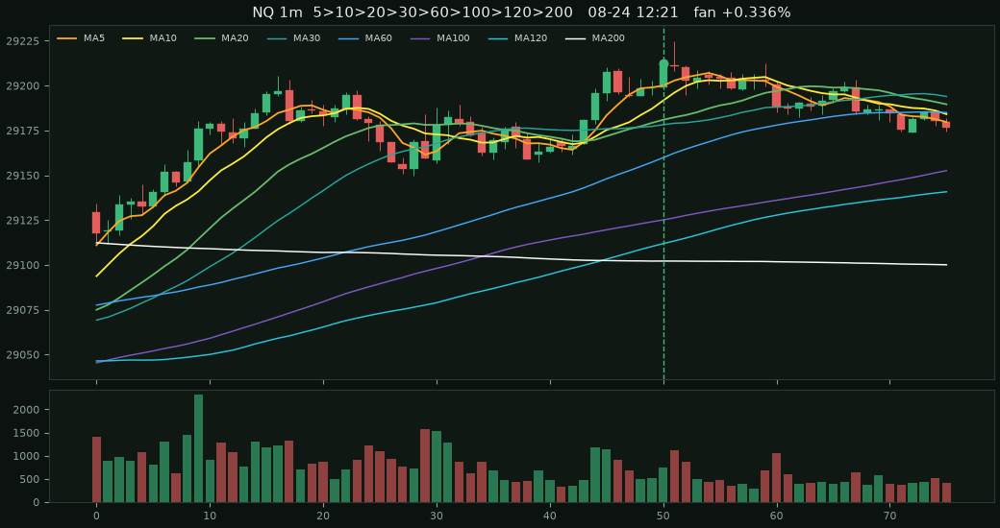
進場 29212.25 · 短均相對 MA200 +0.336%
進場後 15/30/60m：-15.5pt / -36.5pt / -59.5pt
08-24 22:43 · 5>10>20>30>60>100>120>200
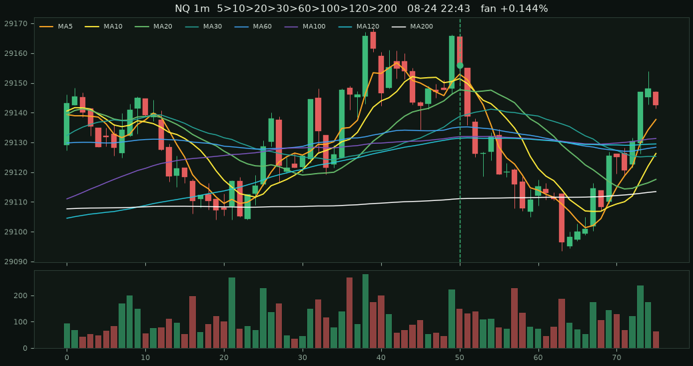
進場 29156.00 · 短均相對 MA200 +0.144%
進場後 15/30/60m：-56.0pt / -2.8pt / +13.2pt
08-25 00:16 · 5>10>20>30>60>100>120>200
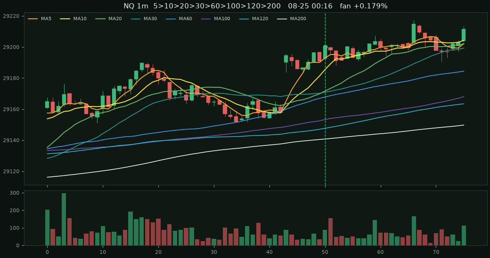
進場 29200.00 · 短均相對 MA200 +0.179%
進場後 15/30/60m：-0.5pt / +14.2pt / +22.2pt
08-25 01:15 · 5>10>20>30>60>100>120>200
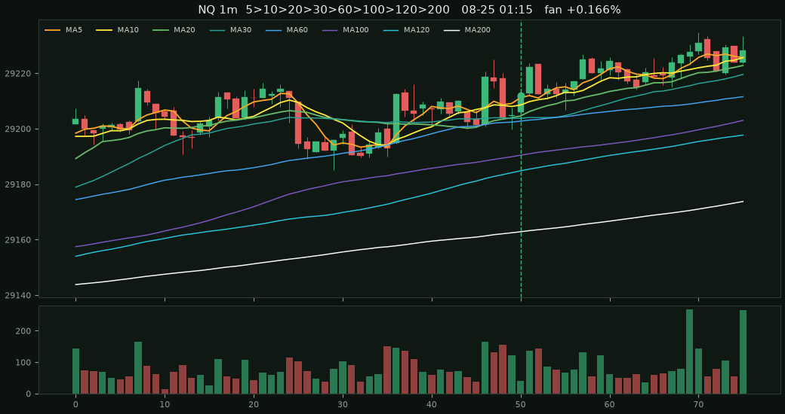
進場 29212.00 · 短均相對 MA200 +0.166%
進場後 15/30/60m：+6.8pt / -1.5pt / +74.0pt
08-25 02:16 · 5>10>20>30>60>100>120>200
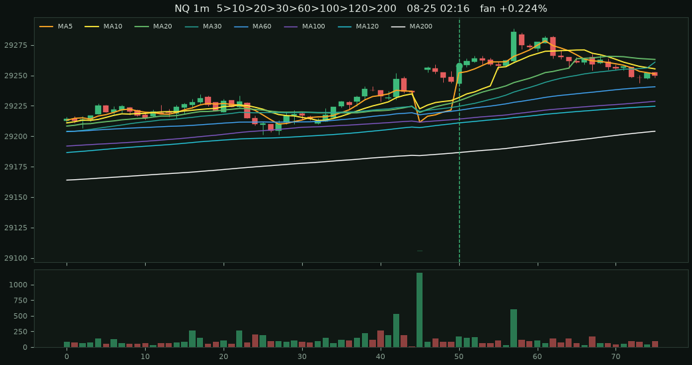
進場 29258.00 · 短均相對 MA200 +0.224%
進場後 15/30/60m：+2.8pt / -2.0pt / -23.5pt
08-25 03:03 · 5>10>20>30>60>100>120>200
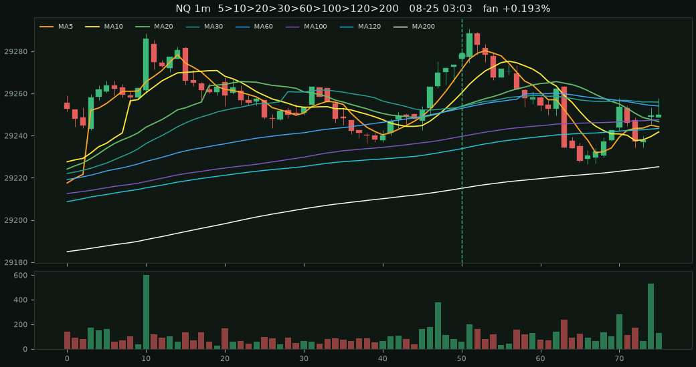
進場 29278.00 · 短均相對 MA200 +0.193%
進場後 15/30/60m：-50.0pt / -37.5pt / -56.0pt
08-25 05:04 · 5>10>20>30>60>100>120>200
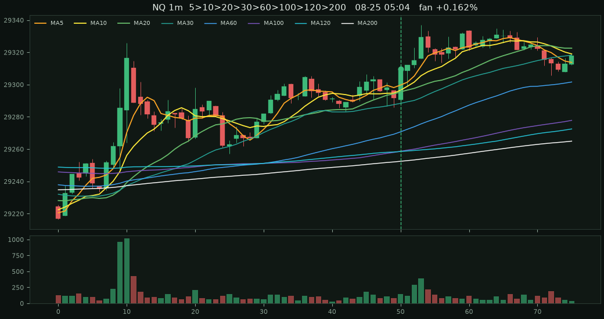
進場 29309.50 · 短均相對 MA200 +0.162%
進場後 15/30/60m：+20.5pt / +52.2pt / +69.5pt
08-25 05:35 · 5>10>20>30>60>100>120>200
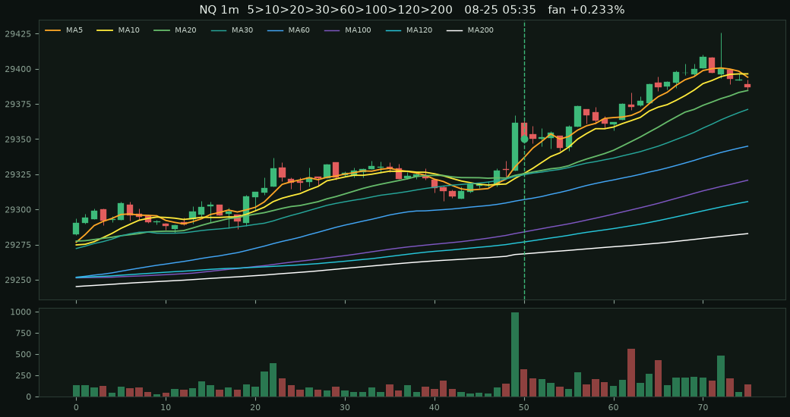
進場 29350.00 · 短均相對 MA200 +0.233%
進場後 15/30/60m：+36.8pt / +40.2pt / +17.0pt